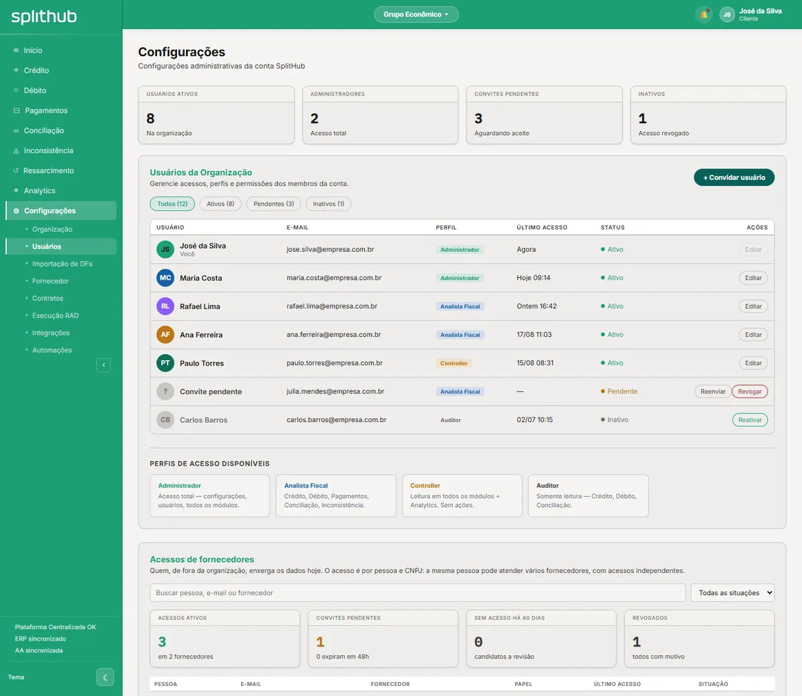
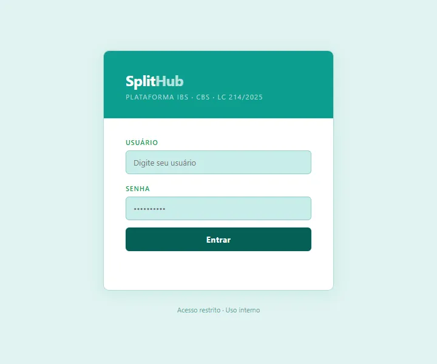
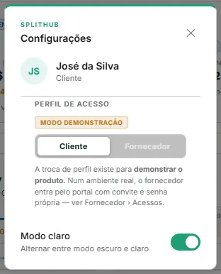
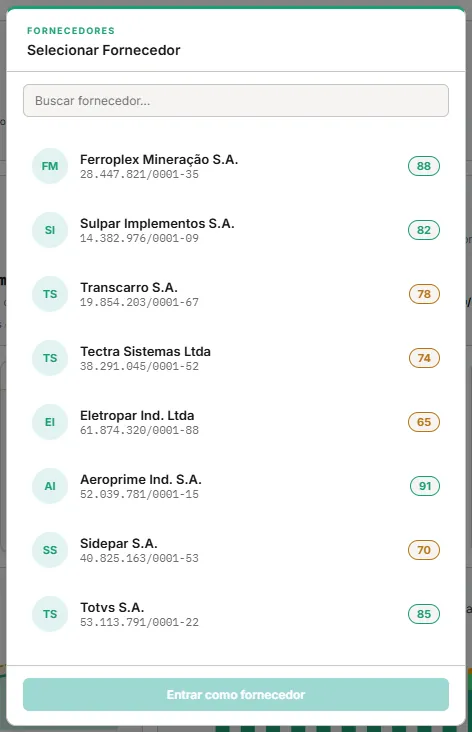

Hoje a tela de Usuários é uma vitrine: mostra uma lista fixa e não cria ninguém. Esta proposta define como uma pessoa ganha acesso, entra na plataforma, recebe um perfil e um escopo, e perde o acesso na hora certa. Para cada tela, mostra o antes e o depois.
O caso CT-01-09 do caderno da implantação — criar os usuários do cliente — não pode ser executado. O motivo não é um botão: é que a plataforma não tem gestão de usuários.
| O que existe hoje | O problema |
|---|---|
| Tela de Usuários | KPIs e lista escritos no HTML. Convidar usuário não faz nada, Editar não abre, os filtros não filtram. |
| Login | Um acesso de demonstração único, igual para todos. Não existe usuário por pessoa, senha própria, MFA nem bloqueio por tentativas. |
| Perfil | O próprio usuário escolhe o perfil no modal de Configurações (modo demonstração). Nada impede um operador de virar fornecedor e vice-versa. |
| Fornecedor | Entra escolhendo um CNPJ numa lista com todos os fornecedores da base. |
| Três conjuntos de perfis | O protótipo usa Administrador, Analista Fiscal, Controller e Auditor; o PRD de Organização, Administrador, Fiscal, Tesouraria, Leitura e Fornecedor; as respostas de segurança enviadas a clientes, seis perfis com outros nomes. Não há como testar, nem prometer, o que não está definido. |
| Decisão D-07 (22/09/2026) | Tirou a autenticação do escopo "por ora". O ambiente do cliente em implantação não tem integração — nem com provedor de identidade —, então sem login próprio ninguém entra. |
Parte do PRD de Organização (v2.3), que é o mais recente e o único que já previa a Tesouraria, de que o RAD e o ressarcimento dependem. Quatro perfis internos e um externo.
| Perfil | Para quem | O que pode | Substitui |
|---|---|---|---|
| Administrador | Quem configura a conta | Tudo, inclusive usuários, perfis, escopos, contratos, integrações e políticas de RAD | Administrador |
| Fiscal | Analista fiscal | Opera Crédito, Débito, Conciliação, Inconsistências e Apuração; lê o resto | Analista Fiscal · operador |
| Tesouraria | Analista de tesouraria | Opera Pagamentos RAD — execução, aprovação do modo assistido e comprovantes; lê os módulos fiscais | — (novo no protótipo) |
| Leitura | Controladoria, auditoria, gestão | Consulta e exporta tudo; nenhuma ação com efeito | Controller · Auditor · visualizador |
| Fornecedor | Pessoa de fora, por fornecedor | Só o Portal do Fornecedor e só os CNPJs do seu acesso | Fornecedor |
| Módulo | Administrador | Fiscal | Tesouraria | Leitura | Fornecedor |
|---|---|---|---|---|---|
| Início e Analytics | Ver | Ver | Ver | Ver | — |
| Crédito, Débito, Conciliação, Apuração | Operar | Operar | Ver | Ver | — |
| Inconsistências | Operar | Operar | Operar família recolhimento | Ver | — |
| Pagamentos RAD | Operar | Ver | Operar | Ver | — |
| Config → Organização, Fornecedor, Contratos | Administrar | Ver | Ver | Ver | — |
| Config → Importação de DFs | Administrar | Operar | — | Ver | — |
| Config → Execução RAD, Integrações, Automações | Administrar | Ver | Ver | Ver | — |
| Config → Usuários | Administrar | — | — | — | — |
| Portal do Fornecedor | — | — | — | — | Operar |
Ver consulta e exporta · Operar executa as ações do módulo · Administrar cria, altera e remove configuração.
As respostas de segurança citam um perfil "serviço". Ele não é pessoa: é a credencial de uma integração, emitida em Config → Integrações, com escopos próprios. Fica fora da lista de usuários — e fora deste ambiente, que não tem integração.
O escopo é a lista de CNPJs que o usuário enxerga: toda a organização ou CNPJs selecionados — uma filial, um grupo de filiais, uma empresa do grupo econômico. Ele recorta todas as telas, inclusive o Início, os gráficos e as exportações, e vale do mesmo jeito para o filtro de grupo econômico do cabeçalho: o filtro só oferece o que está no escopo.
| Exemplo | Perfil | Escopo | O que vê |
|---|---|---|---|
| Analista da filial de Curitiba | Fiscal | 1 CNPJ | Créditos, débitos e inconsistências só daquela filial |
| Tesouraria central | Tesouraria | Toda a organização | Todas as guias RAD de todos os CNPJs |
| Auditoria externa do trimestre | Leitura | Empresa auditada | Tudo daquela empresa, sem poder agir |
O Administrador tem sempre a organização inteira: quem administra acessos precisa enxergar todas as empresas a que dá acesso.
| Estado | Entra? | Aparece na lista | Conta como licença? |
|---|---|---|---|
| convidado | Só pelo link do convite | Sim, com o prazo do convite | Não |
| ativo | Sim | Sim | Sim |
| bloqueado | Não, até desbloquear | Sim, com o motivo | Sim |
| desativado | Não | No filtro de inativos | Não |
| expirado | Não | Sim, com Reenviar | Não |
Usuários são ilimitados no plano; a coluna de licença serve para os relatórios de acesso, não para cobrança.
O antes é captura do protótipo de hoje. O depois é o desenho proposto, no visual da plataforma, com dados fictícios. Seis telas.

| Usuário | Perfil | Escopo | Entrada | Estado | Último acesso | |
|---|---|---|---|---|---|---|
| JSJosé da Silvajose.silva@induspar.com.br · você | Administrador | Toda a organização | Senha + MFA | Ativo | agora | ⋯ |
| MCMaria Costamaria.costa@induspar.com.br | Administrador | Toda a organização | Senha + MFA | Ativo | hoje 09:14 | ⋯ |
| RLRafael Limarafael.lima@induspar.com.br | Fiscal | 3 CNPJs · filiais PR | Senha + MFA | Ativo | ontem 16:42 | ⋯ |
| AFAna Ferreiraana.ferreira@induspar.com.br | Tesouraria | Toda a organização | Senha + MFA | Bloqueado 5 tentativas · 10:02 | 17/10 11:03 | Desbloquear |
| ?Júlia Mendesjulia.mendes@induspar.com.br | Fiscal | 1 CNPJ · Curitiba | — | Convidado expira em 2 dias | — | Reenviar |
| PTPaulo Torrespaulo.torres@induspar.com.br | Leitura | Toda a organização | Senha + MFA | Ativo | 15/07 08:31 há 103 dias | ⋯ |
| CBCarlos Barroscarlos.barros@induspar.com.br | Leitura | — | — | Desativado por Maria Costa · 02/07 | 02/07 10:15 | Reativar |
Não existe: o botão + Convidar usuário não tem ação.
Não existe. Todo mundo entra pelo mesmo acesso de demonstração.
Maria Costa convidou você para a conta da Induspar Tecnologia com o perfil Fiscal.
Leia o código com um aplicativo autenticador — Google Authenticator, Microsoft Authenticator ou outro.

Digite o código do seu aplicativo autenticador.
Não existe: Editar fica desabilitado.


O fornecedor entra com o próprio e-mail, senha e MFA e cai direto nos CNPJs do seu acesso — sem lista de fornecedores para escolher.
| Regra | Descrição |
|---|---|
| RN-USR-01 | O e-mail é único dentro da organização. Convidar um e-mail já existente é recusado. |
| RN-USR-02 | Todo usuário tem exatamente um perfil e um escopo. Sem os dois, o convite não é enviado. |
| RN-USR-03 | O convite vale 7 dias. Reenviar gera um link novo e invalida o anterior. |
| RN-USR-04 | O MFA é obrigatório no login próprio. Não há como pular a ativação no primeiro acesso. |
| RN-USR-05 | Cinco tentativas erradas seguidas, de senha ou de código, bloqueiam o acesso por 15 minutos e avisam os administradores. |
| RN-USR-06 | Desativar encerra todas as sessões abertas do usuário no mesmo instante. |
| RN-USR-07 | A organização não pode ficar sem administrador ativo: o último não pode ser desativado, rebaixado nem bloqueado pelo administrador. |
| RN-USR-08 | O Administrador tem sempre a organização inteira como escopo. |
| RN-USR-09 | Trocar perfil ou escopo exige motivo e vale a partir da próxima ação do usuário, sem novo login. |
| RN-USR-10 | Usuário desativado não é apagado: some da operação e permanece na trilha, com tudo o que fez. |
| RN-USR-11 | A sessão expira após 30 minutos sem uso e, de qualquer forma, após 12 horas. |
| RN-USR-12 | O usuário não altera o próprio perfil nem o próprio escopo, mesmo sendo administrador. |
É o que já foi declarado nas respostas de segurança enviadas a clientes — login próprio com MFA em provedor de identidade gerenciado — e que hoje o produto não entrega.
| Tema | Proposta |
|---|---|
| Identidade | Provedor de identidade gerenciado da AWS (Amazon Cognito), com a senha guardada só como hash pelo provedor; a plataforma nunca vê nem grava a senha. |
| Senha | 12 caracteres ou mais, letras e números, recusada se constar em vazamentos conhecidos; sem troca forçada periódica. |
| MFA | Fora neste momento (D-USR-03). Proposto: aplicativo autenticador (TOTP) obrigatório, com códigos de recuperação de uso único; o modelo permite ligá-lo depois sem mudar perfis nem escopos. |
| Sessão | Cookie protegido (httpOnly, SameSite, só por TLS), expiração por inatividade e por tempo máximo, encerramento remoto. |
| E-mails | Convite e redefinição por e-mail transacional (Amazon SES), com link de uso único e prazo curto. |
| Trilha | Entrada e saída, falhas de entrada com IP, bloqueios, convites, aceites e cada alteração de perfil, escopo ou estado. |
| Autorização | Cada requisição avaliada pela política central de autorização a partir do perfil e do escopo, com acesso negado por padrão. |
| Fase | Entra | Para quê |
|---|---|---|
| Fase 1 | Login próprio por e-mail e senha, convite e primeiro acesso, os cinco perfis com a matriz, desativação com fim das sessões, Minha conta e trilha. O escopo e a saída da troca de perfil entram conforme a D-USR-05 e a D-USR-06 | A implantação do cliente atual, que não tem integração — e o CT-01-09 do caderno |
| Fase 2 | SSO por SAML 2.0 ou OpenID Connect, provisionamento por SCIM 2.0, revisão periódica de acessos com relatório de usuários e perfis | Clientes com provedor de identidade, como os que pedem Entra ID ou PingIdentity nas RFPs |
| Fora | Perfis personalizados pelo cliente, aprovação em duas pessoas para dar acesso, restrição por IP ou horário | Sem demanda concreta hoje; o modelo de perfis fixos cobre os casos conhecidos |
| Onde | O que muda |
|---|---|
| Caderno da implantação | CT-01-09 passa a Disponível com a fase 1. Casos sugeridos para entrar: convite expirado, bloqueio por tentativas, desativação que encerra a sessão, escopo que recorta as telas e o último administrador protegido. |
| PRD de Organização | A seção 15 ganha os perfis unificados, a matriz e a autenticação; a decisão D-07 é revista. |
| Proposta de acesso de fornecedores | O fornecedor usa a mesma autenticação desta proposta; as duas podem ser aprovadas juntas. |
| Banco de respostas para RFP | A resposta de perfis passa a citar os cinco perfis e a matriz, no lugar dos seis nomes antigos. |
| API pública | Sem mudança: as integrações continuam por credencial de serviço em Config → Integrações. |
| # | Decisão | Recomendação | Situação |
|---|---|---|---|
| D-USR-01 | Rever a D-07 e trazer a autenticação para o escopo | Sim: sem login próprio, o cliente atual não entra | Aprovada 26/10/2026 · opção A |
| D-USR-02 | Perfis: Administrador, Fiscal, Tesouraria, Leitura e Fornecedor, com a matriz da seção 3 | Sim, substituindo os nomes do protótipo e das respostas de segurança | Aprovada 26/10/2026 |
| D-USR-03 | MFA obrigatório no login próprio | Sim | Fora neste momento 26/10/2026 · login só com e-mail e senha |
| D-USR-04 | Convite válido por 7 dias | Sim | Aprovada 26/10/2026 |
| D-USR-05 | Escopo por CNPJ, com o Administrador sempre na organização inteira | Sim | Em análise detalhe na 11.3 |
| D-USR-06 | Tirar a troca de perfil do produto, mantendo-a só na demonstração | Sim | Em análise detalhe na 11.4 |
| D-USR-07 | Bloqueio de 15 minutos após 5 tentativas; sessão de 30 minutos sem uso e 12 horas no máximo | Sim | Bloqueio fora neste momento 26/10/2026 · tempos de sessão a confirmar, na 11.5 |
| D-USR-08 | SSO e SCIM na fase 2 | Sim | Aprovada 26/10/2026 |
A D-07 foi tomada em 22/09/2026 e registrada no PRD de Organização (v2.3): "não mexer em autenticação por ora". A auditoria PRD × protótipo tinha marcado a autenticação como andaime — a API prometia um POST /v1/auth/login sem tela nem PRD —, e a iniciativa de proteger o acesso de demonstração do site estava pausada desde 11/09. Para não travar a atualização dos PRDs, a decisão foi documentar quem pode o quê e deixar de fora como a pessoa entra.
Aprovar a D-USR-01 revoga a D-07: a autenticação de pessoas passa a ser escopo do produto, construída pelo time de desenvolvimento, e o PRD de Organização vai à v2.4. Não mudam a autenticação das integrações (credencial de serviço do contrato público), a iniciativa de senha do site de demonstração (segue pausada) nem o protótipo, que é estático e só simula as telas.
| Tela | Ajuste | Por quê |
|---|---|---|
| 6.1 Config → Usuários | Sai o KPI Bloqueados e o estado bloqueado; a coluna Entrada mostra Senha (ou SSO, na fase 2) | D-USR-03 e D-USR-07 |
| 6.3 Primeiro acesso | Fica só a etapa da senha; saem o autenticador e os códigos de recuperação | D-USR-03 |
| 6.4 Entrar | Fica a tela de e-mail e senha; saem o código do autenticador e o aviso de bloqueio | D-USR-03 e D-USR-07 |
| 6.5 Detalhe do usuário | Saem Redefinir MFA e Bloquear; ficam Redefinir senha e Desativar | D-USR-03 e D-USR-07 |
| 6.6 Minha conta | Saem Trocar autenticador e Novos códigos de recuperação | D-USR-03 |
| Regras | RN-USR-04 (MFA) e RN-USR-05 (bloqueio) ficam suspensas | D-USR-03 e D-USR-07 |
As telas da seção 6 seguem como foram propostas, para registro; o ajuste acima é o que entra na construção. Elas serão redesenhadas depois que a D-USR-05 e a D-USR-06 forem decididas.
O que é. Além do perfil, que diz o que a pessoa pode fazer, cada usuário teria um escopo, que diz sobre quais CNPJs. O escopo é a organização inteira ou uma lista de CNPJs. Ele recorta todas as telas, os indicadores do Início, os gráficos, as exportações e o próprio filtro de grupo econômico do cabeçalho, que só oferece o que está no escopo. O Administrador tem sempre a organização inteira (RN-USR-08).
Como é hoje. Não existe escopo: todo usuário vê todos os CNPJs. O filtro de grupo econômico é uma escolha de visualização, não uma restrição, e qualquer pessoa troca de grupo quando quiser. O app incorporado ao master em 26/10 já mostra, no resumo do convite, "em toda a organização", que é o comportamento de hoje escrito por extenso.
| Situação | Com escopo | Sem escopo |
|---|---|---|
| Analista que só atende a filial de Curitiba | Vê os créditos, débitos e inconsistências daquela filial | Vê os de todas as empresas e filiais |
| Auditoria externa de uma empresa do grupo | Leitura daquela empresa e de mais nada | Leitura do grupo inteiro, inclusive das empresas não auditadas |
| Grupo com duas empresas e times fiscais separados | Cada time vê a própria empresa | Os dois times veem as duas |
| CNPJ novo cadastrado na organização | Entra para quem tem a organização inteira; quem tem lista precisa que o administrador o acrescente | Aparece para todos |
O ponto que precisa de decisão: o recorte é por filial ou por empresa? A apuração da CBS e do IBS e o saldo credor são da empresa, a raiz do CNPJ, e não da filial. Quem tem no escopo só a filial de Curitiba enxerga os documentos dela, mas a apuração e o saldo que esses documentos ajudam a formar são da empresa inteira. Há três saídas, e nenhuma é gratuita: esconder a Apuração de quem não tem a empresa inteira; mostrar a apuração da empresa só para leitura, abrindo uma exceção ao escopo; ou mostrar só a contribuição da filial, um número que não existe em nenhuma declaração.
O resto se resolve por regra: fornecedores e contratos são cadastros e aparecem para todos, mas os documentos, as guias e os valores dentro deles seguem o escopo; uma política de Execução RAD que cobre CNPJs fora do escopo fica só para leitura; as exportações seguem o escopo; a credencial das integrações não muda.
| Opção | O que entra | Ganha | Custa |
|---|---|---|---|
| A Por CNPJ, como proposto | Escopo por filial ou por empresa, à escolha do administrador | Cobre todos os casos acima, inclusive o analista da filial | Exige decidir o que a filial vê na Apuração, e é o maior volume de construção e de testes |
| B Sem escopo na fase 1 | Todos veem a organização inteira; o escopo vai para a fase 2 | Nada a construir agora; o convite e o caderno ficam como estão | Auditoria externa e grupos com times separados não são atendidos |
| C Por empresa | Escopo pela raiz do CNPJ: a empresa inteira ou nada | A apuração e o saldo ficam inteiros para quem os vê; atende a auditoria e os times por empresa | O analista de uma filial só passa a ver a empresa toda |
C na fase 1, com o recorte por filial na fase 2 se um cliente pedir. O modelo é o mesmo: o escopo continua sendo uma lista, de empresas em vez de CNPJs, e passar à filial depois não muda perfis nem dados. Se o cliente da implantação tiver uma empresa só, a B resolve a fase 1 sem custo e a C entra quando o primeiro grupo com mais de uma empresa chegar.
O que muda com A ou C: o convite e o detalhe do usuário ganham o campo Escopo, a listagem ganha a coluna, a trilha registra a troca de escopo com motivo (RN-USR-09) e o caderno ganha o caso "o escopo recorta as telas". Com B, nada muda agora.
Como é hoje. No modal de Configurações, a pessoa alterna o próprio perfil entre Cliente e Fornecedor, sem novo login (telas da seção 6.6). Ao virar Fornecedor, escolhe qualquer fornecedor da lista e passa a ver o Portal como se fosse ele, inclusive com as ações do portal, como enviar o comprovante de RAD ou PIX. Existe para a demonstração: mostrar os dois lados do produto com um login só. Na priorização ela aparece como Troca de perfil in-session, em M0, e na proposta do núcleo do MVP como recurso de demonstração.
O que já foi decidido. Em 14/09/2026, na proposta de acesso de fornecedores (v1.2, aprovada), a troca foi mantida como recurso de demonstração, para sair do produto antes da primeira instalação com dados reais, e ganhou o selo Modo demonstração no modal. Na mesma proposta, o fornecedor passou a entrar por convite e senha própria, o que já está no protótipo. A D-USR-06 confirma essa decisão no novo modelo de perfis e diz o que a substitui.
Por que não pode ir para produção:
| Opção | O que fica | Quando faz sentido |
|---|---|---|
| A Tirar do produto | Só no ambiente de demonstração. O modal vira Minha conta e o fornecedor entra com o próprio login | Sempre; é a recomendação e é o que já foi decidido em 14/09 |
| B A, mais um "ver como fornecedor" | Uma prévia somente leitura do que um fornecedor vê, para o Administrador, sem nenhuma ação e registrada na trilha | Se o suporte ao fornecedor for frequente, como em "o fornecedor diz que não vê o documento". Pode entrar depois, sem desfazer a A |
| C Manter como está | A troca livre, com todas as ações | Não recomendada: carrega os três problemas acima para produção |
Com a A, o Portal do Fornecedor só é alcançado pelo login do próprio fornecedor. Essa porta de entrada já foi aprovada em 14/09, na proposta de acesso de fornecedores, e o convite com senha própria já está no protótipo. O que falta é o mesmo que falta para o cliente: o login de verdade, em provedor de identidade, que a D-USR-01 trouxe para o escopo.
O que muda com A: a Troca de perfil in-session sai do inventário do produto e da faixa M0, como saiu o selo de modo demonstração na v2.6 do mapa; a tela 6.6 passa a ser a Minha conta; o ambiente de demonstração e o de avaliação seguem com a troca.
O bloqueio por tentativas ficou fora; os tempos de sessão ainda não foram confirmados. A proposta é 30 minutos sem uso, depois dos quais a pessoa entra de novo, e 12 horas no máximo por sessão, o que cobre um dia de trabalho com folga e obriga um login novo por dia. Tempos mais longos reduzem o atrito, mas alargam a janela de quem deixa a máquina aberta; mais curtos interrompem o fechamento da apuração no meio. Recomendação: confirmar 30 minutos e 12 horas.
SplitHub · Proposta · Gestão de usuários e acessos · v1.2.1 · 26/10/2026